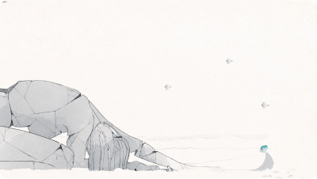

Seja bem-vindo ao guia de todas as conquistas do jogo GRIS.
Tenha em mente de que este guia contém spoilers sobre o jogo.
Recomendamos que você complete-o antes de ler!
Gris - Guia de Conquistas
Conquistas da campanha
Estas conquistas são obtidas naturalmente ao longo do jogo.

Vermelho - Complete o capítulo 1

Verde - Complete o capítulo 2
Azul - Complete o capítulo 3
Amarelo - Complete o capítulo 4

O fim - Complete o jogo
Conquista de nível
Estas conquistas são obtidas através de algumas tarefas que são feitas por capítulo. Em alguns casos, você precisará fazer voltas no mapa para completá-las.

Tempestade de areia
Inuksuit
Maçãs

Enguia

Aves Mágicas
Inuksuit
Durante o capítulo 2, destrua todas as pequenas estátuas com sua habilidade de se transformar em bloco (você pode fazê-lo ao pular e usar a habilidade). Você pode começar pelo segundo checkpoint.


Maçãs
Durante o capítulo 3, faça o seu novo amigo comer todas as maçãs que você encontrar. Boa parte das maçãs aparecerão em locais fáceis, porem há outras 4 que você pode perder de vista se não procurar direito. Você precisa começar pelo início do capítulo.
Maçã 2
Quando seu amiguinho chegar no topo para tirar a pedra que bloqueia o caminho, rapidamente volte para a direita e então seu amiguinho o seguirá.

Maçã 4
A quarta maçã se encontra logo após o grande escorregador, encontre seu amiguinho e volte para a direita.

Aves Mágicas
Após você ter aprendido a cantar no capítulo 5, você precisa cantar para 7 pássaros escondidos na região. Você pode iniciar do terceiro checkpoint.
Pássaros 1 & 2
Há dois pássaros no centro que você cantará automaticamente quando aprender sua nova habilidade.

Pássaro 3
Na parte da direita, atrás de uma parede escondida para encontrar uma lembrança.
Pássaro 4
Depois de pegar a estrela à direita, antes de quebrar o chão.
Pássaro 5
Na parte da esquerda, cante para as flores vermelhas e suba para pegar a lembrança.

Pássaro 6
Antes do salto com as aves amarelas.
Pássaro 7
Depois de pegar a estrela na esquerda e antes de pular aqui.

Tempestade de areia
No capítulo 2, não seja pego pela tempestade de areia, enquanto
estiver dentro de locais você estará imune à tempestade, assim como
usar sua transformação em bloco.
Enguia
No capítulo 4, segundo checkpoint, desvie de todos os ataques da
enguia gigante. Aperte o botão de saltar sempre que der, exceto quando
a enguia tenta te engolir, espere um pouco e então aperte novamente.
As 5 Fases do Luto
Você precisará encontrar áreas secretas ou fazer algo específico em certos locais para conseguir estas
conquistas.
Fase 1 - Negação
Bem no começo do jogo, ande para a direita até que você consiga se mover livremente. Então, volte para
a esquerda e encontre a estátua. Aqui, deixe a personagem cair e levantar por si mesma (não toque no
teclado ou no controle).


Fase 2 - Raiva
No cenário preto e branco do capítulo 2 checkpoint 2, você precisará destruir 3 estátuas (você não pode
utilizar sua transformação em vão para que consiga a conquista).


Fase 3 - Barganha
Após alguns grandes saltos nos pássaros vermelhos durante o capítulo 3 checkpoint 2, encontre esta
estátua e tente cantar para ela.


Fase 4 - Depressão
Durante o capítulo 4 checkpoint 2, na parte que você precisa coletar 6 estrelas para acordar a
tartaruga, vá direto à escuridão e procure um pouco à esquerda.

Fase 5 - Aceitação
Durante as últimas cenas do jogo, depois de chegar na superfície da água escura, cante em frente ao
túmulo.
Colecionador de Lembranças
Colete todas as lembranças,
clique aqui
para ver a localização de todas as lembranças!
Infância
Depois de pegar todas as lembranças do jogo, selecione o último capítulo e vá logo abaixo, onde seu
personagem começa. Há uma entrada no lado esquerdo escondida em uma parede quebrada.